본문콘텐츠영역
ABOUT
Heroes clash with demons in disguise.
HUNTR/X
Meet Rumi, Mira, and Joy—the world-renowned K-pop girl group who secretly fight as demon hunters to protect humanity. Led by main vocalist Rumi , this trio combines their global stardom with ancient mystical powers passed down through generations of female warriors. Using their songs to maintain magical barriers called Soul Gates , they keep demons sealed away from the human world. While Rumi leads with responsibility and reason, Mira brings fierce choreography and realistic wisdom, and Joy contributes passionate idealism and lyrical creativity . Behind their dazzling performances and chart-topping hits lies a sacred duty—they are the last line of defense against the demonic forces threatening to devour human souls and unleash chaos upon the world.
SAJA BOYS
Meet Jinu, Abby, Romance, Baby, and Mystery—the seemingly perfect five-member K-pop boy band who have taken the world by storm. Named after the Korean mythological death messengers, these charismatic performers hide a sinister secret beneath their flawless charm and captivating performances. While they enchant audiences with their otherworldly talent and mesmerizing melodies, they are actually demons on a dark mission to harvest human souls. Posing as beloved idols, they use their supernatural allure and hypnotic music to ensnare the hearts of unsuspecting fans, making them HUNTR/X's most formidable and dangerous adversary in the battle between light and darkness.
DUFFY
The blue tiger companion who follows Jin-woo around as his beloved pet. Unlike the red and black demons, Duffy is colored in blue tones like the hunters, representing his good nature as a benevolent spirit. He has an adorable obsession with fixing fallen objects like flower pots and trash cans, though his chubby paws make him comically fail every time. Despite his initially intimidating appearance with glowing red eyes, Duffy is actually a harmless and loyal friend who can travel between dimensions through portals. This lovable character has become the ultimate scene-stealer with his clumsy yet endearing behavior.

CHARACTERS
unique souls, each with their own story.
-
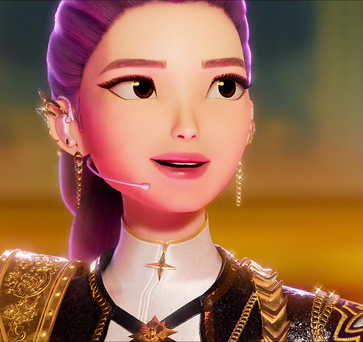
- Rumi
- INFJ
-
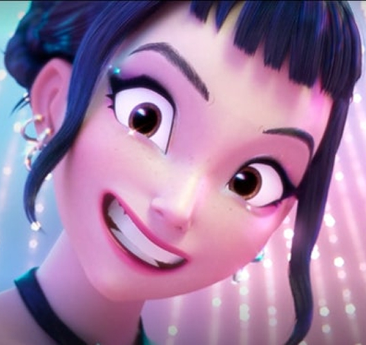
- Zoey
- ENFP
-
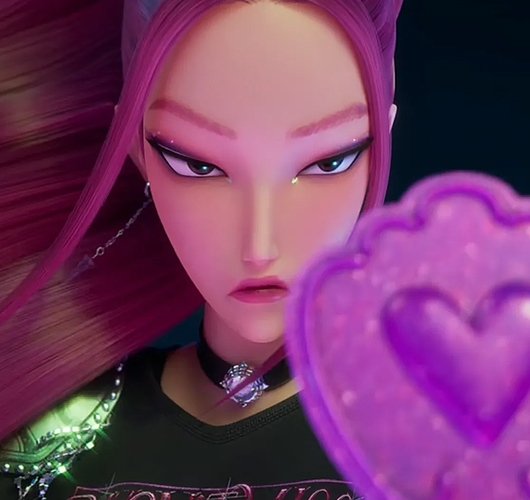
- Mira
- ISTP
- 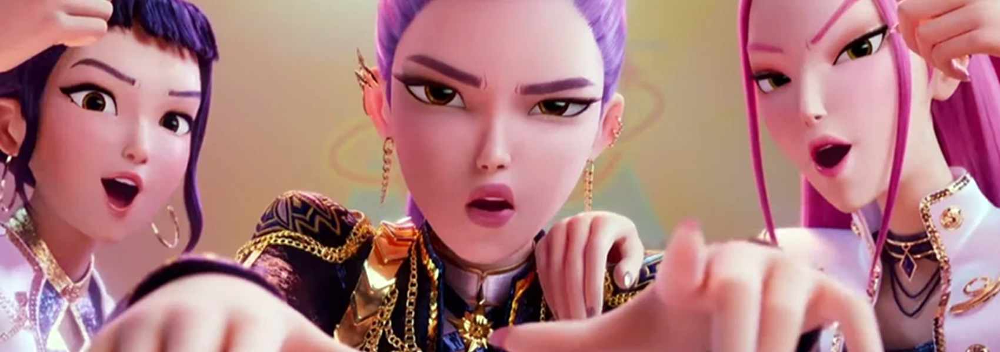
-
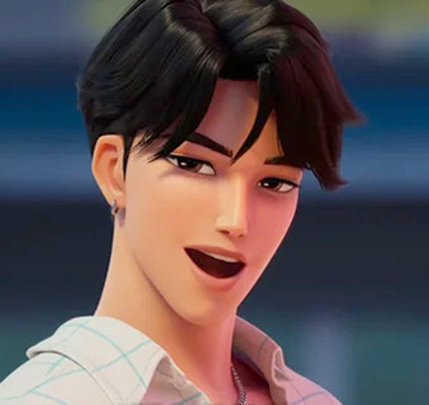
- Jinu
- ENTP
-
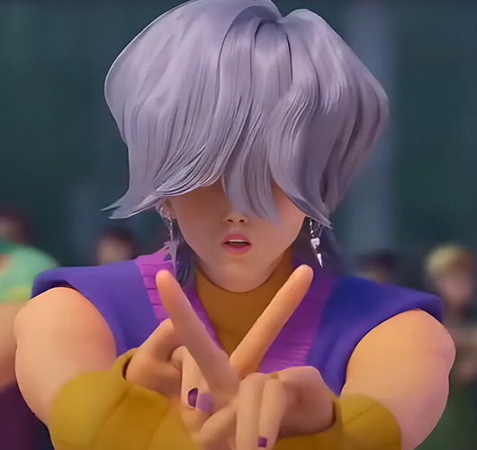
- Mystery
- INTP
-
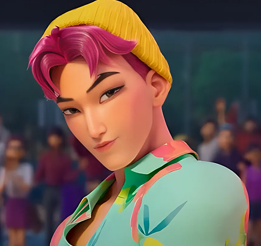
- Abby
- ESTP
-
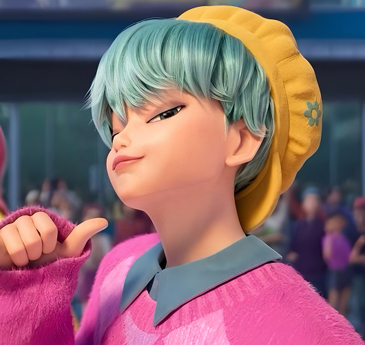
- Baby
- ISFP
-
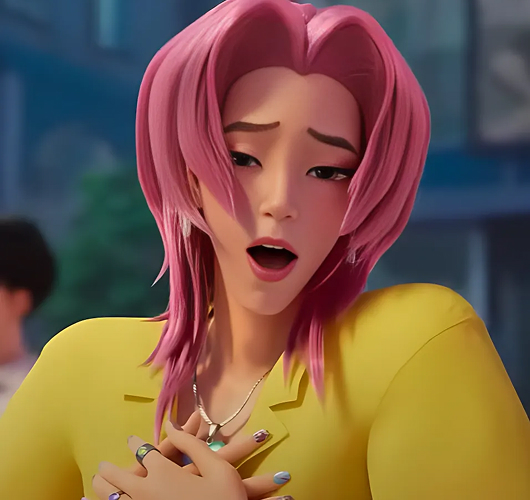
- Romance
- ESFP
-
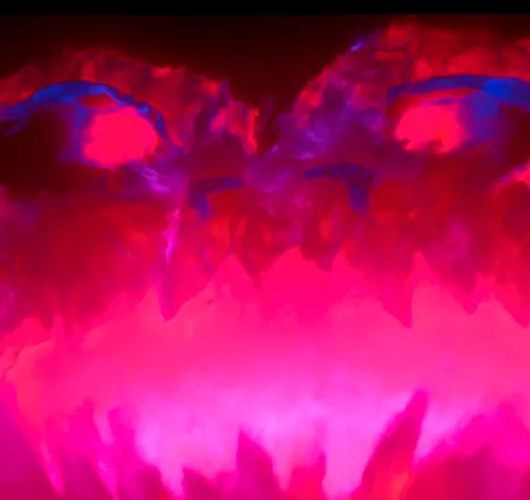
- Gwi-Ma
- ENTJ
- 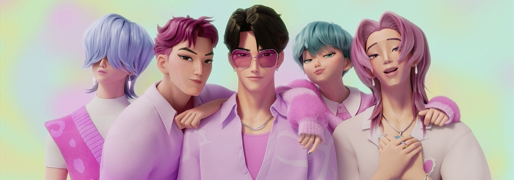
TRAILER
Songs that open worlds, voices that save souls.
- HUNTR/X - Golden
- This song tells a story about finding a golden light inside yourself. Using the magic of the Golden Honmoon, the music becomes a shield of light. It keeps everyone safe from the shadows trying to creep into the world.
- 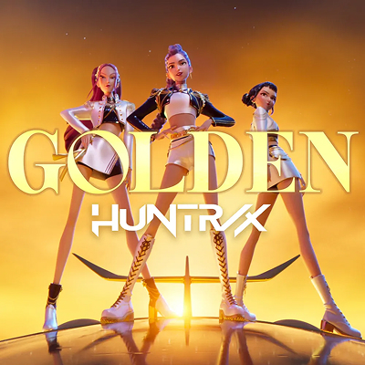
-

- 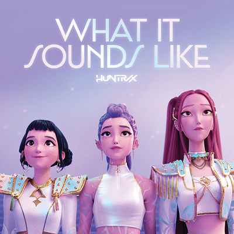
NEWS
Songs that open worlds, voices that save souls.
HUNTRIX Conquers Billboard Charts

Sajaboys Roars into Billboard Top 10
Jinu & Lumi: Secret Date?
HUNTR/X member Lumi and Saja Boys' Jinu were spotted together on a Seoul rooftop yesterday evening. Fan photos show the two idols standing close and having what appeared to be an intimate conversation. However, sources later confirmed they were simply rehearsing lines for their upcoming music video collaboration. Both agencies denied any romantic involvement, stating it was purely professional. The 'secret meeting' was actually a scheduled script reading session that ran overtime due to creative discussions about their joint performance.
HUNTR/X Caught Eating Free?
Abby's Muscle Mystery Exposed!
Groups at War Over Fans?
Tensions reportedly rise between HUNTR/X and Saja Boys as both groups competed for the same venue last weekend. Witnesses claim they saw members from both sides having a 'heated discussion' backstage. However, sources close to the groups revealed it was simply a friendly debate about who would perform first at their joint charity concert. Both teams were actually coordinating their surprise collaboration performance, not fighting. The 'dramatic confrontation' was just passionate planning for their upcoming unified stage.
GALLERY
Rare captures from their extraordinary journey.